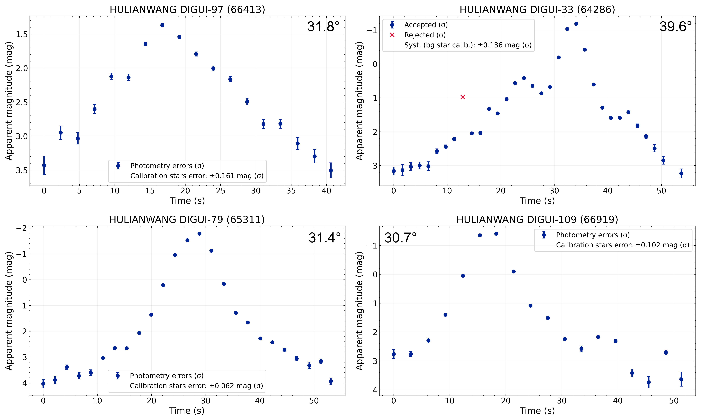
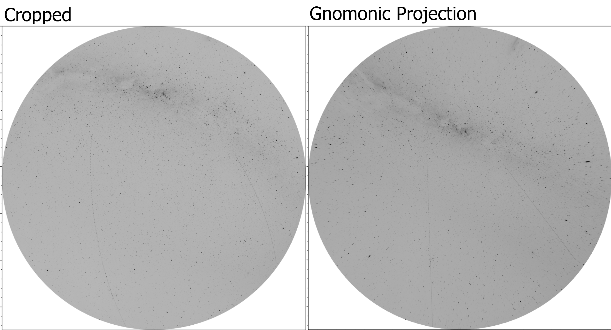
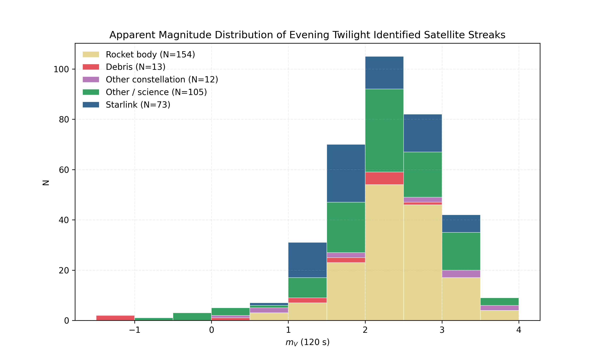

Overview
With over 16,000 satellites currently in orbit and significant, ambitious plans to increase the orbital population, the optical effects of satellites are of increasing concern among astronomers [1]. Because the FCC does not govern the optical band, detailed studies of the optical effects of bright satellites are needed and should be presented to support mitigation and policy development.
All-sky cameras with large FOV therefore offer a unique angle for satellite detection and photometric classification. Using methods designed for meteor analysis by the global meteor network, this project applies small-FOV satellite measurement methods to the ALPACA all-sky camera housed at ESO Paranal [2][3].
How the pipeline works
Calibrate the fisheye lens
Solve the camera's distortion using SkyFit2 so every pixel maps to a known celestial position on the sky.
Re-project the sky
A gnomonic projection turns satellite tracks, which follow great circles, into straight lines.
Detect streaks
A Hough transform picks out the straight tracks in the re-projected images.
Find glints
Contour detection algorithm detects glints, which, due to crosstalk, appear as ovals with streak tails.
Identify satellites
SatChecker API applied to identify satellite/object matches.
Measure brightness
Differential photometry against field stars gives the satellite's apparent magnitude along the track.
Results so far
The pipeline enables you to construct single-exposure light curves. Given the ALPACA camera's sensitivity, < 0 mag glints are measurable without saturating the CMOS sensor.






Preprint
A paper is in preparation. Email me if you'd like a copy when it's ready.
Get in touch
I'm happy to talk about the pipeline, the data or collaborations. Email oscar.bergtrom25@imperial.ac.uk, or open an issue on GitHub.
References
- McDowell, J. (2026, June 12). Satellite Statistics Page. Jonathan's Space Pages. planet4589.org/space/stats (accessed 25 June 2026).
- Vida, D., Šegon, D., Gural, P. S., et al. (2021). The Global Meteor Network – Methodology and First Results. Monthly Notices of the Royal Astronomical Society, 506(4), 5046–5074. doi:10.1093/mnras/stab2008
- Global Meteor Network (2026). RMS: Raspberry Pi Meteor Station software (incl. SkyFit2). GitHub repository. github.com/CroatianMeteorNetwork/RMS (accessed DD Month 2026).